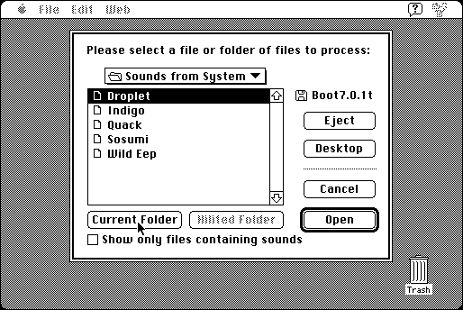

Download
snd-cataloguer-151.zip (197K) SndCataloguer 1.5.1 repackaged into a zipped hfs disk image and checksum file. The disk image can be mounted with Mini vMac.
snd-cataloguer-151.hqx (270K) SndCataloguer 1.5.1 in the original format.
copyright: David Sinclair
mod date: Jan 29, 2001
license: former shareware, now free
official url :
Dejal - Classic
Collects information about sounds (such as name, size, format, suit case name, folder name, and disk name), and writes it to a TEXT file. “Requires Mac OS 7.0 or above”. “Registered Name: Dejal Systems”, “Registration Code: 841038066348”.

If you find these downloads useful, please consider helping the Gryphel Project, which hosts them.
Here are the md5 checksums for the downloads, signed with Gryphel Key 5:
--------- GRY SIGNED TEXT --------- b1d972d4a5e823cbf553e746b91aaf0a snd-cataloguer-151.zip 291883390911a9e9ced38d65a860caca snd-cataloguer-151.hqx ------- BEGIN GRY SIGNATURE ------- Gry/4Xa8CFcUzxdN/EoTZDL61EO9JQO4qlgbcL5XGtxZe2NCKjloD3WlIBaaQmlx BvjvwaVBqGtIQNsakzytzKdqN2OAYdCboBV/cbYJAYbt6HaQqXmfWjrfu/wMqC5+ 4yn1uYrq7kSyGb0LodliRiwVBFDXd2PiY0T8q0LBwHj5nj/x0KLlsPwM/5GU/hzi -------- END GRY SIGNATURE --------